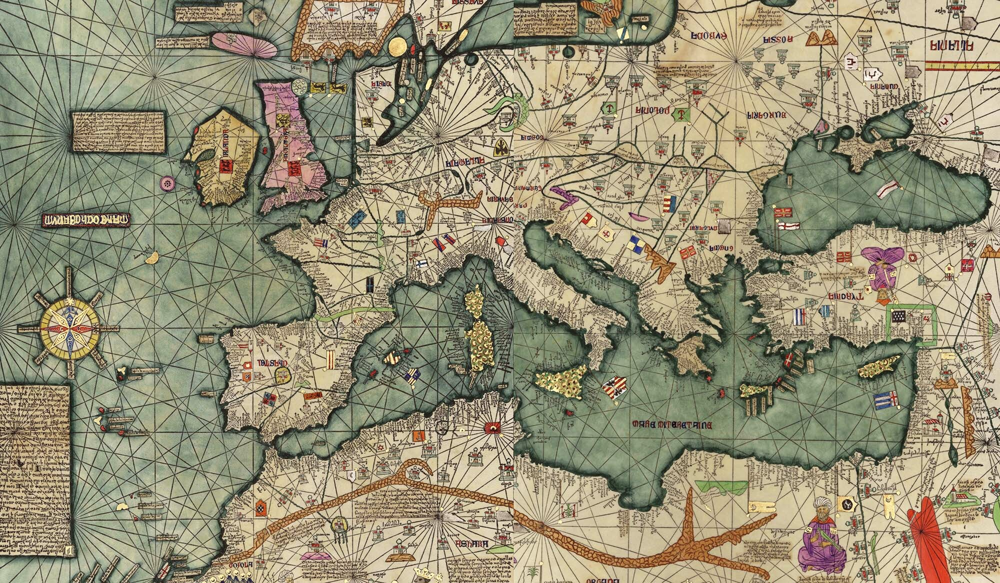
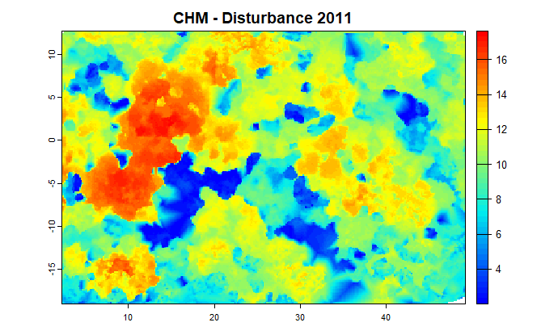
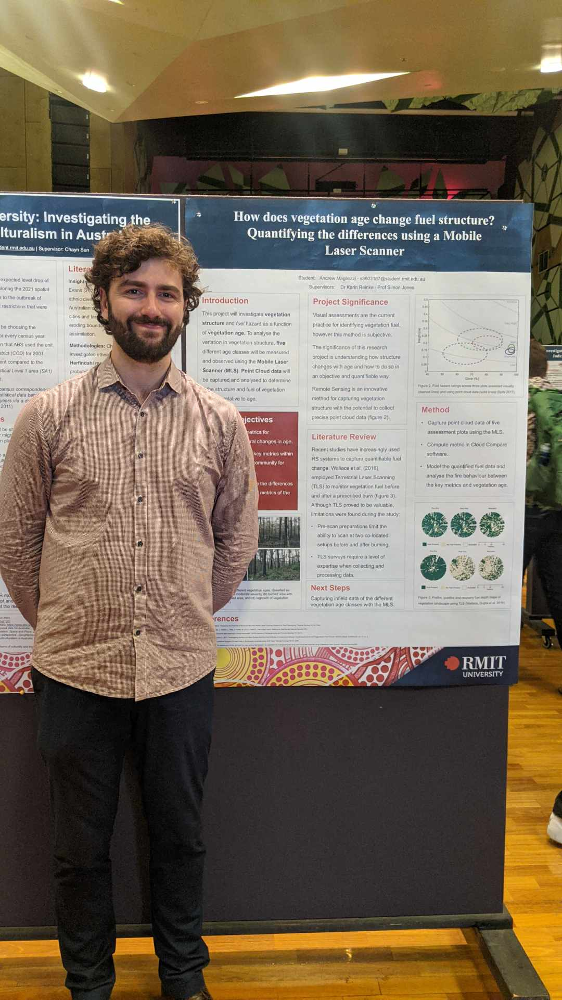

Geoportfolio
Andrew Magliozzi
About
This website is the geoportfolio of Andrew Magliozzi which was made for the subject Professional Practice (GEOM2116). The website entails
information that is academically and profesionally related to the field of geospatial science
A brief introduction about myself is that I am born and raised in Melbourne, Australia and as of June 1997, I am in my final year of the
Bachelor of Science (Geospatial Science) (Honours) course. My geospatial-related interests is working with remote sensing data, specifically creating
and analysing 3D models using point cloud data. My current geospatial project is analysing the change of fuel structure with vegetation age using a Mobile Laser Scanning.
My own personal hobbies include sports and playing table top games! More detailed information can be found in the About page!

Academic Portfolio Overview
Capstone Project: How does fuel structure change with vegetation age?
Quantifying the differences using Mobile Laser Scanner?
My capstone project is the analysis of fuel structure to identify changes of vegetation age. This research project was completed as a self-actuated course at RMIT, where the project was
designed and implemented by myself and academic supervisors (Karin Reinke & Simon Jones). During the completion of the capstone project, major assessments were completed in order to satisfy
the final requirements of the honours degree:
- Literature Review: Designing a report for the project by outlining the purpose/rationale of the project and describing key literature relevant to the project.
- Poster Presentation: Conference presentation to collagues and industry professionals of the intial capstone design.
- Final Implementation: Final semester procedures to collect, examine, and present results.
Below are images and maps of my project:
Note: If map display is too small, right-click the image and 'Open in new tab' to allow zooming of the map.
Canopy Height Model (CHM)

Point Cloud Model
The image of the 3D point cloud model was created from a script programmed in R language. This involved using the lidR package in which I created:
- Canopy Height Model (CHM above)
- Vertical Profile of Vegetation
- Fractional Cover
This project has completed the literature review and the proposal presentation, with results and the written thesis to be completed.
Note: If map display is too small, right-click the image and 'Open in new tab' to allow zooming of the map.
Proposal Presentation

Industry Experience
This page will briefly cover my work experience as a geospatial consultant within the industry. The company that I worked for
during my studies was Aurecon Group. This page will outline the role and work completed during my tenure at the company.
Aurecon Group
Geospatial Intern & Student Surveyor
Februrary 2022 - Current
I began working at Aurecon Group at the beginning of my second year at university, where I worked as a student surveyor to obtain industry experience and skills.
My employment at the company is based within the Melbourne Office, where my engagement included working from home, the office, and on worksites where required.
The following tasks were completed during my employment at Aurecon:
- Applying surveying skills under the direction of an experienced Surveyor,
- Assist with field operations including setting up equipment and collecting data,
- Digitising and extracting data with geospatial programs (such as ArcGIS & MicroStation),
- Compiling notes to understand and complete tasks efficiently; and
- To seek knowledge and opportunities to enhance my skills within the role.
My experience at Aurecon as a student Surveyor has been very fulfilling and educational. I have been able to improve my communication skills with co-workers onsite,
and what questions to ask my supervisor and how to ask them. Where university coordinators would provide answers, work experience at Aurecon has taught me how to
identify the answer to my question individually. I always have my work reviewed, but this concept has elevated my growth as a student. As a result,
I have progressively looked to improving my knowledge at the company by writing down notes in OneNote and keeping documents onsite such as standard codes.
The ability to connect with individuals within and outside of Aurecon has improved my professionalism and confidence within the industry and in life.
Where working with students in university is minimal, its mandatory to be able to work in a team to optimise the success of a project.
Where the scientific principles of university has enabled me to work in the role as a student Surveyor, the work experience over the last year at
Aurecon has provided the professional insight required to flourish in the geospatial industry.
Skills and Proficiencies
 |
GIS Applications |
 |
Point Cloud Data |
|
Cartographic Principles |
 |
Adobe Illustrator |
|
Web Mapping (ArcGIS Online, HTML & CSS) |
 |
Python Programming |
Credits and Attributions
The following programming languages and software were used to create the website
- HTML
- CSS
- JavaScript
- Visual Studio Basic
The deliverables contains content from the following subjects:
- Capstone Project (Design & Implementation)
Special thanks to the following people who have helped me make this website with their expertise and guidance:
As per the policy of using the Flaticons with a free account, the attributions and crediting of the creators of the icons are as below:
Attributions of icons used: